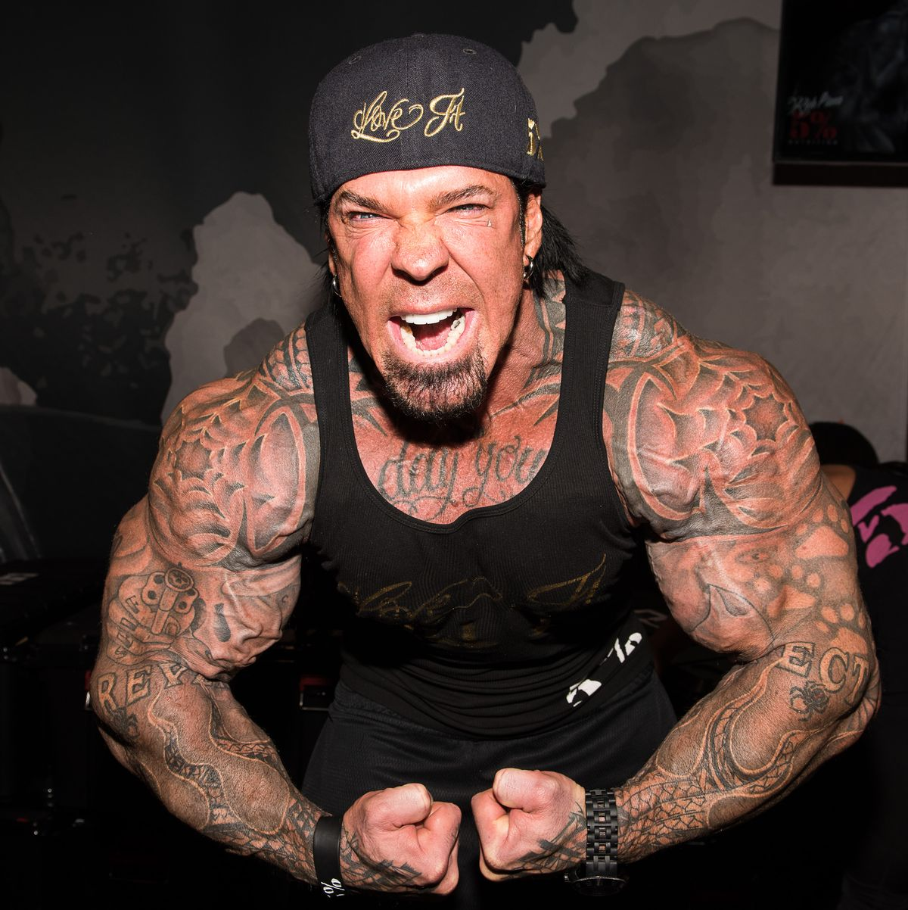
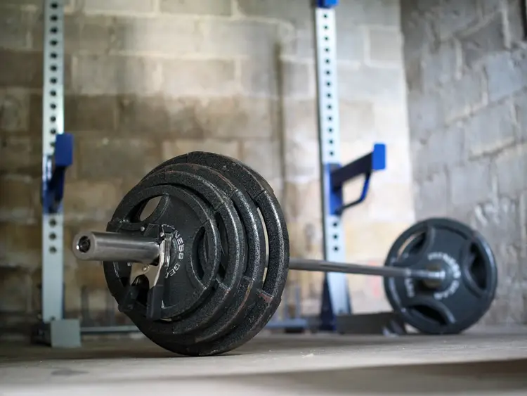

Common training misconceptions
There's some truth to it, yet it's still poor advice. You should train hard, but safely, in a controlled and programmed manner, following the principles of the results you want to achieve. Going "Hard" doesn't mean lifting heavy, it means lifting closely to concentric muscle failure with good form, in simple words. You should use a weight that allows you to perform the exercise with perfect form, and you should keep repeating the movement until you can't perform another repetition with good form. As a general rule, if you are a beginner, never use weights that don't allow you to perform at least 5 perfect repetitions.
You'll get some weight gain from lifting weights, but it's usually a small amount (around 2kg in A WHOLE YEAR!) and almost exclusively from muscle mass which is not going to give you a bulky look, instead you'll appear healthier and you will be stronger. If you fear looking like one of those top-class bodybuilders, then don't worry, it takes 10+ years of meticulous daily weight training and sometimes chemical compounds to look like that, so don't stress about it and enjoy the process of a healthier lifestyle.
Huge training volumes such as training every single day has proven to even reduce muscle synthesis (muscle gain) meaning that too much exercise is actually bad and counterproductive.
At first, going to the gym for 40 minutes 3 days a week is plenty stimulus for most beginners, as a general rule, you have to allow time for your muscles to recover before you train them again,
too much frequency or long-lasting sessions should absolutely be avoided for beginners and only considered for advanced lifters who really have a reason to train for that long.
Rest is just as important as training itself, and you should respect it if you want the best results
Scientific data has proven that training a muscle group 2 times per week provides most of the growth you can get. In every session you should train hard enough to feel the muscle swollen by the blood pump you get,
but never too far past that point, some muscle damage is needed for muscle growth, but too much is counterproductive. You can find more on that in the bibliography down below
This is true in some sense but wrong in many others, there are a lot of ways to measure progress, one of them being adding more weight to the bar while performing the same number of repetitions. However, it has been proven that adding repetitions while keeping the same weight and proximity to concentric muscle failure is also as beneficial as adding more load. That's good news for people with limited access to weights or gym equipment, focusing on perfect technique, and progressing through rep addition and proximity failure will provide enough high-quality muscle growth.
Good practices
Most of the times, in weight training, "the best" is related to the individual, meaning that some excersices that might be really good for one person, might not be as good to the other.
that's why you can't rely on pre-made training programs, as they don't consider the individual needs.
However, there ae some pointers worth mentioning, that help us decide wether an exercise can be consider a good excercise, some of the cues are:
-You should feel the target muscle doing most of the working
-There should be NO pain nor discomfort in the joints or tendons during the excersice
-You should feel an increased amount of blood in the target muscle after the excercise, also known as "the pump"

As a begginer, you can probably add more weight and/or repetitions every week, but as time passes, the progression you make will not be as fast,
In general you want to approach failure, but it has to be controlled, so a good way of deciding wether you should add more weight is by looking back
at last week's session and ponder wether you had troubles controlling the excercise or taking it throught all the range of motion, if the answer is "No"
then you could try to add more weight and perform the same number of reps with perfect form. If the answer is "yes" then you should not add any more weight that week
When it come to repetitions, you have to consider wether you can perform one more repetition with good form. However, when it comes to repetition progress,
you have to be aware that you shouldn't add an infinite amountof repetitions if your goal is muscle growth, if that's your case, then you should use a weight that allows
you to fail within 5 and 30 repetitions, being the 10 to 15 range the most common range for most excercises.
Over-training is very common among begginers, mostly because they believe that making a lot of work will get them faster results. The reality is that there's only so much
stimulus for growth that you can send to the muscle before it caps off or starts producing so much muscle damage that all the resources end up being used just for recovery
instead of growth.
You could stop training after you feel a good pump in the target muscle or a fair amount of disruption and weakness, sometimes you feel both as one might imply the other.